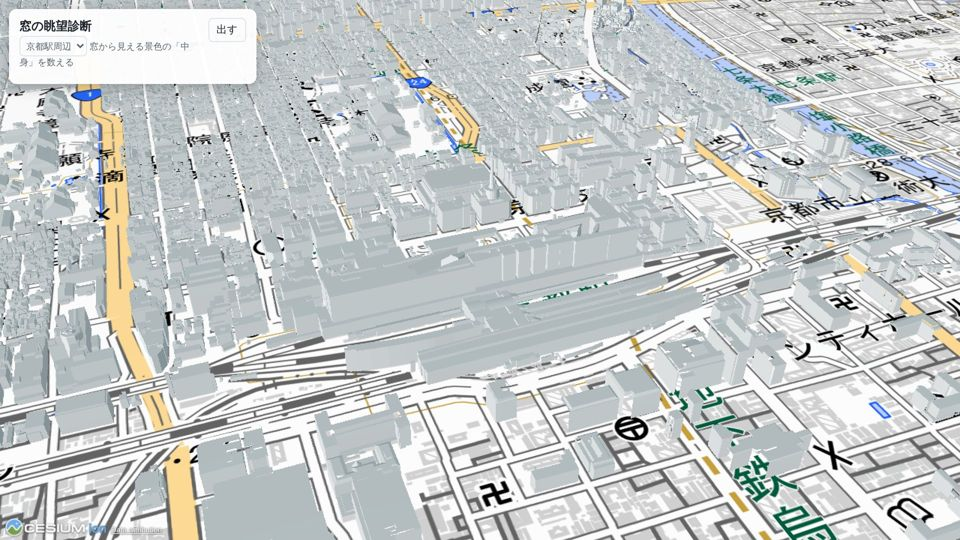
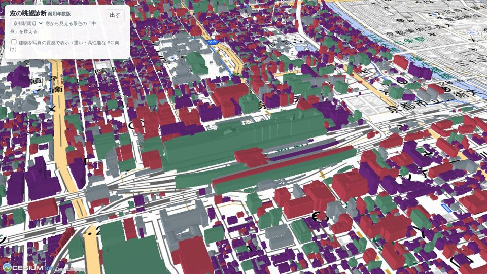

窓の眺望診断
窓から見える景色を、PLATEAU の建物ごとの属性で「中身」まで分解し、建て替えで変わりやすい景色かどうかを数えます。対象は京都駅周辺（東京駅周辺にも切り替え可能）。

窓の眺望診断 →
窓の位置・階数・向きを決めて、空・建物・築40年以上の建物が景色に占める割合を数える。建物を消したり、仮の建物を置いたりして将来と比べる。夕日が見えるかも判定。

耐用年数版 →
建物ごとに「建築年＋耐用年数（構造・用途ごと）」で建て替え時期の目安を出し、◯年後に景色のどれだけが耐用年数を迎えるか、その建物がなくなったら景色はどう変わるかを数える。
データ確認用のビューア（東京23区の建物・浸水想定の色分け）: explore.html